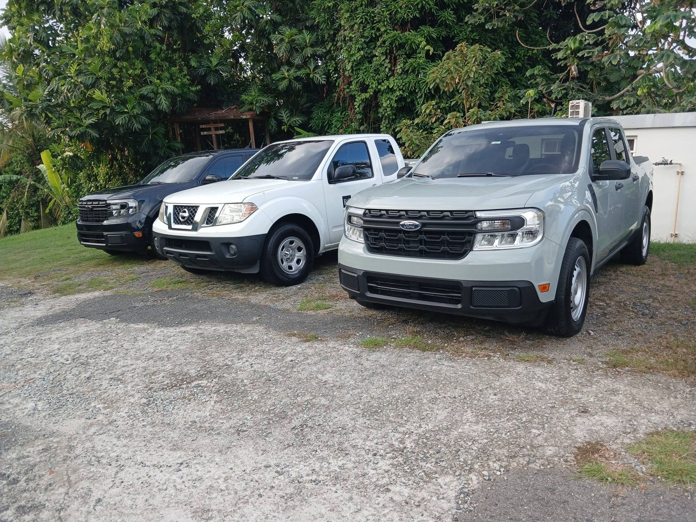
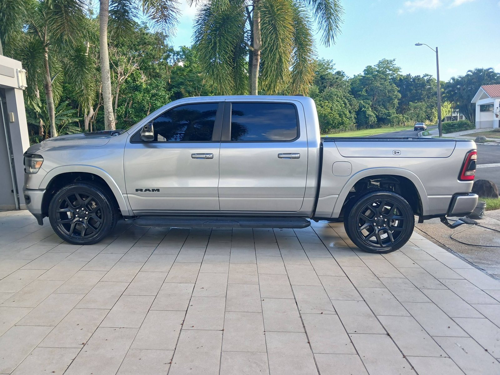
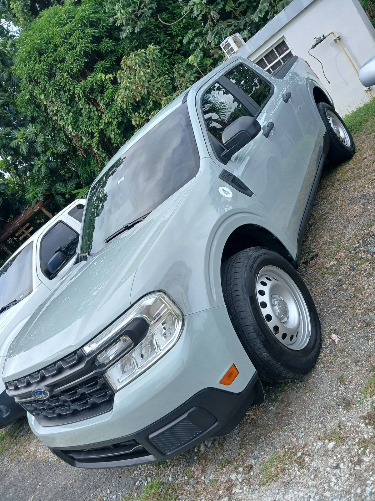
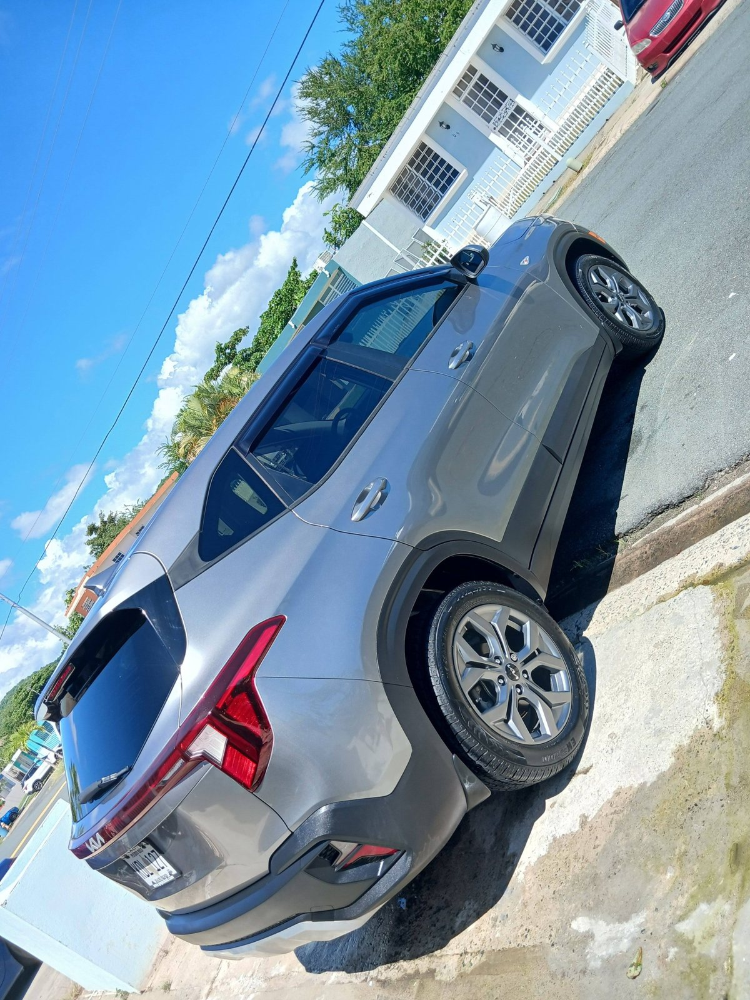
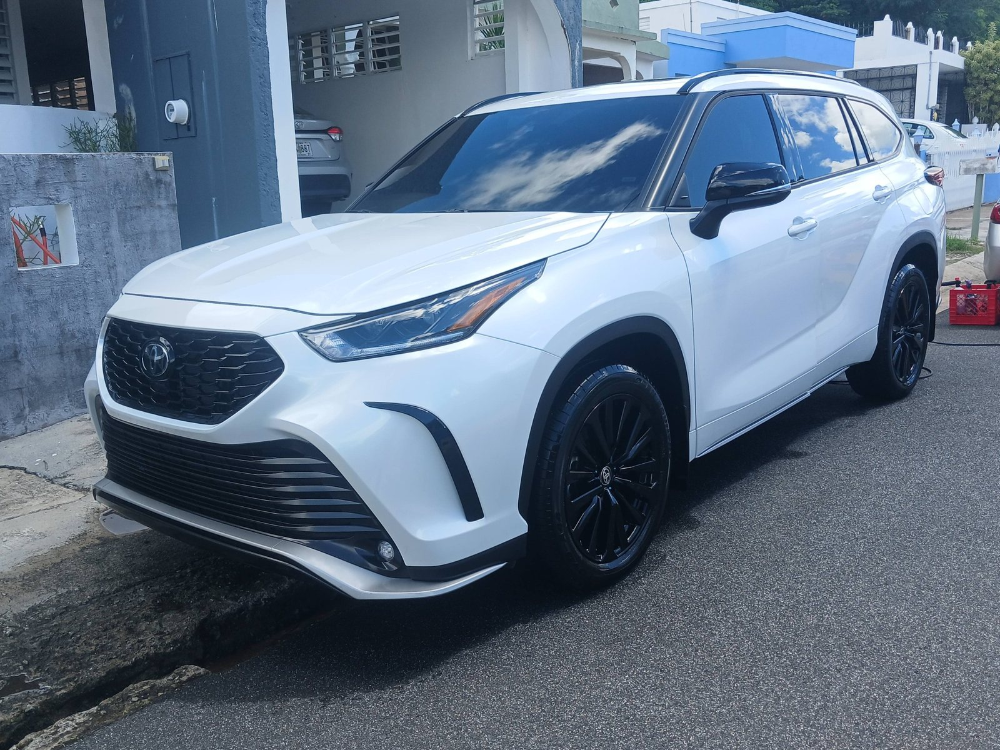
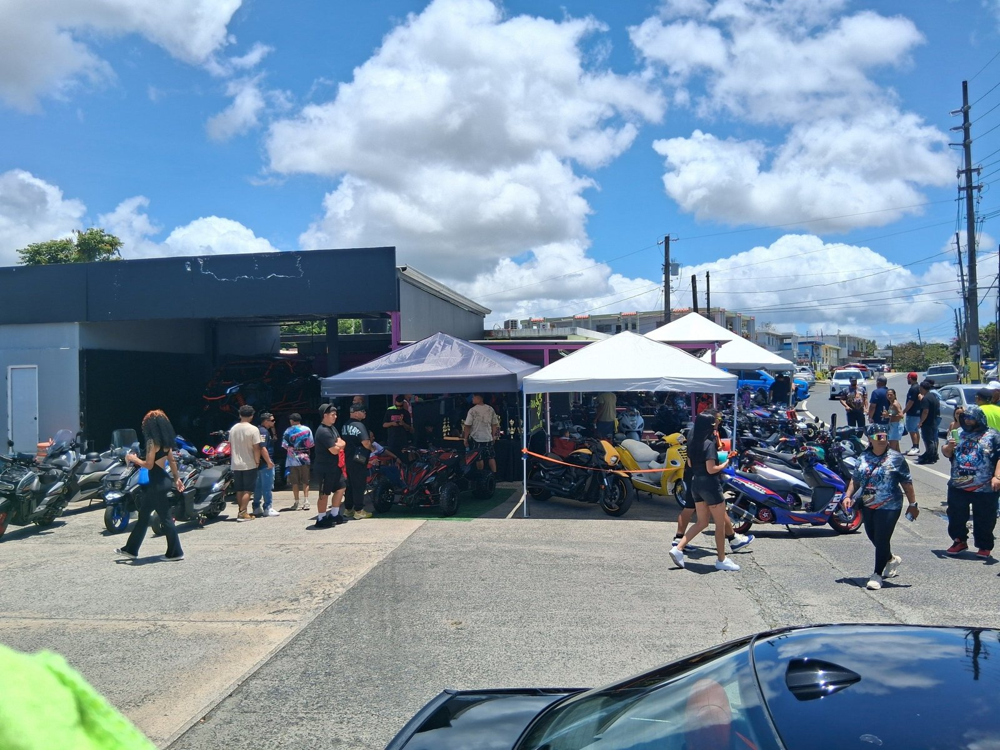
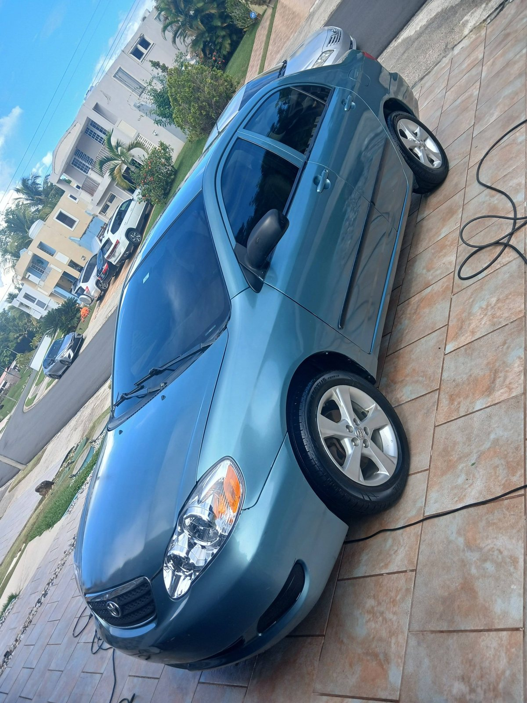

Lavado completo
Lavado exterior completo que deja tu carro brillando de nuevo.

Lavado que va mas alla de una simple limpieza - Las Piedras, Puerto Rico
Lavado de calidad con productos de alta calidad, en Las Piedras. Pasa por Camino 198 y sal rodando como nuevo.
Lunes a sabado, 8:00 a. m. a 5:00 p. m.
Servicios
Cada servicio se muestra con una foto real de nuestro trabajo, no con imagenes de catalogo.

Lavado exterior completo que deja tu carro brillando de nuevo.

Espacio y equipo para pickups y vehiculos grandes, sin apuro.

Atencion a cada panel, goma y cristal para un acabado parejo.

Vuelve cada semana y manten tu carro siempre presentable.
Trabajos reales
Estas son fotos reales publicadas por Anthony Car Wash. Nada de imagenes de catalogo.


Como funciona
Pasa por Camino 198 en Las Piedras, sin cita complicada.
Lavado con productos de alta calidad, de arriba a abajo.
Sales con tu carro limpio y listo para la calle.
Preguntas frecuentes
En Camino 198, Las Piedras, Puerto Rico.
Lunes a sabado de 8:00 a. m. a 5:00 p. m.
Si, atendemos autos, SUVs y pickups.
Por WhatsApp al (787) 676-3248 o por llamada.
Cotizar
Telefono: (787) 676-3248
Ubicacion: Camino 198, Las Piedras
Horario: Lunes a sabado, 8:00 a. m. a 5:00 p. m.
Facebook: Pagina oficial en Facebook